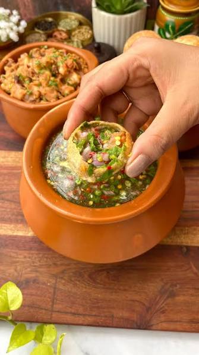

- Butter Chicken
- Chole Bhature
- Paneer Tikka

- Dosa
- Vada
- Idli

- Pani Puri
- Chaat
- Samosa

- Gulab Jamun
- Rasgulla
- Kheer
India is known for its diverse and flavorful cuisine, which varies from region to region.
From spicy curries to sweet desserts, Indian food offers a wide range of tastes and textures.
Some of the most famous dishes include Butter Chicken, Biryani, Dosa, Poori, and Vada.
Each dish has its own unique preparation method and ingredients, making Indian cuisine a delightful experience for food lovers.
